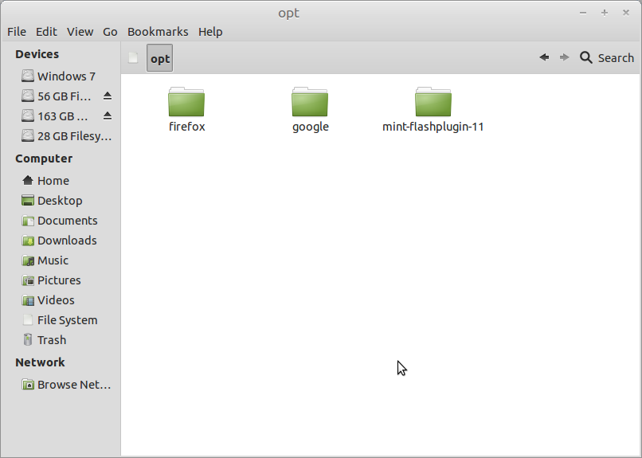

The Linux File Structure
Windows feels like home?
Linux feels like the menacing alien from Alien? O.o
Lets take some time to understand why Linux rocks! \m/

File Structure? Hierarchy? Standard? What the fsck?!
/
The Root Directory
Everything on your Linux system is located in your / directory. Everything? Yes EVERYTHING!
/bin
Essential User Binaries
It contains essential user binaries(programs). They have important system programs and utilities like the bash shell.
/opt
Optional Packages
The /opt directory contains subdirectories for optional software packages. It's commonly used by proprietary software that doesn't obey the standard file system hierarchy – for example, a proprietary program might dump its files in /opt/application when you install it.
/boot
Static Boot Files
It contains files needed to boot the system. GRUB boot loader's files are stored here.
/dev
Device Files
Linux exposes devices as files, and the /dev directory contains a number of special files that represent devices. These are not actual files as we know them, but they appear as files – for example, /dev/sda represents the first SATA drive in the system.
/media
Removable Media
They serve as mount points for partitions, CD-ROMS, pendrives, external hardrives etc.
/home
Home Folders
The /home directory contains a home folder for each user. For example, if your user name is vaishak, you have a home folder located at /home/vaishak. This home folder contains the user's data files and user-specific configuration files. Each user only has write access to their own home folder.
/lib
Essential Shared Libraries
The /lib directory contains libraries needed by the essential binaries in the /bin and /sbin folder.
/usr
User Binaries & Read Only Data
The /usr directory contains applications and files used by users. For example, non-essential applications are located inside the /usr/bin directory and Libraries for each are located inside the /usr/lib directory.